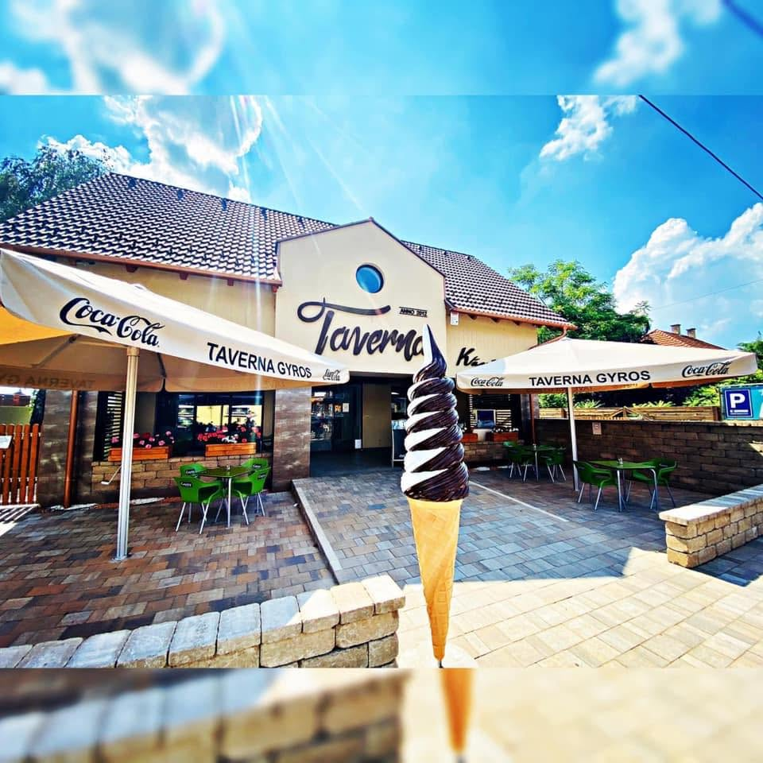
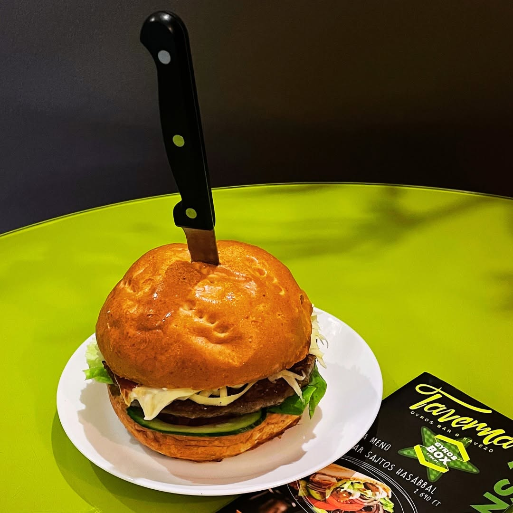
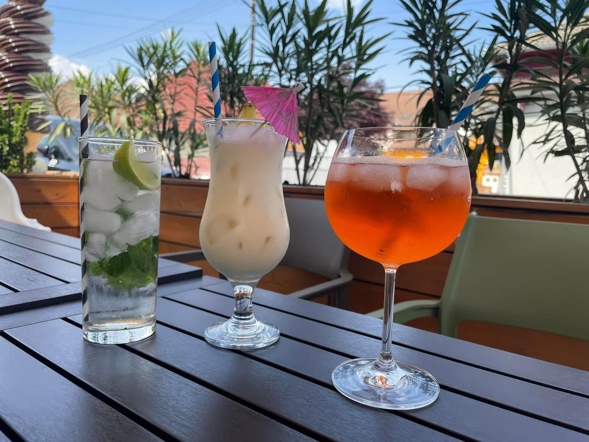
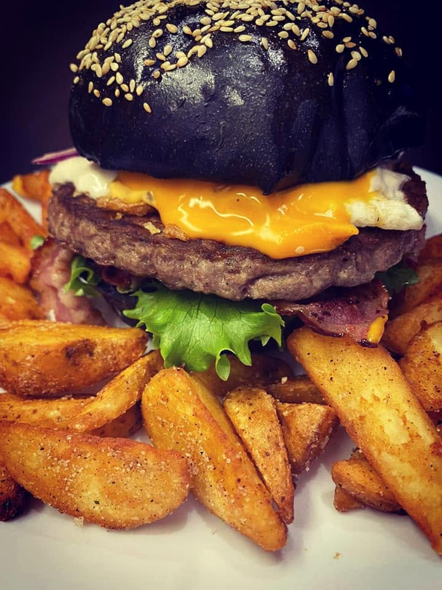
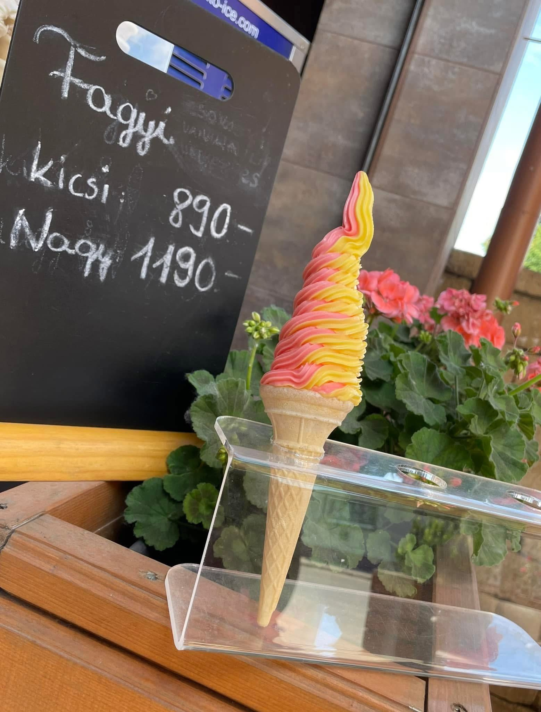
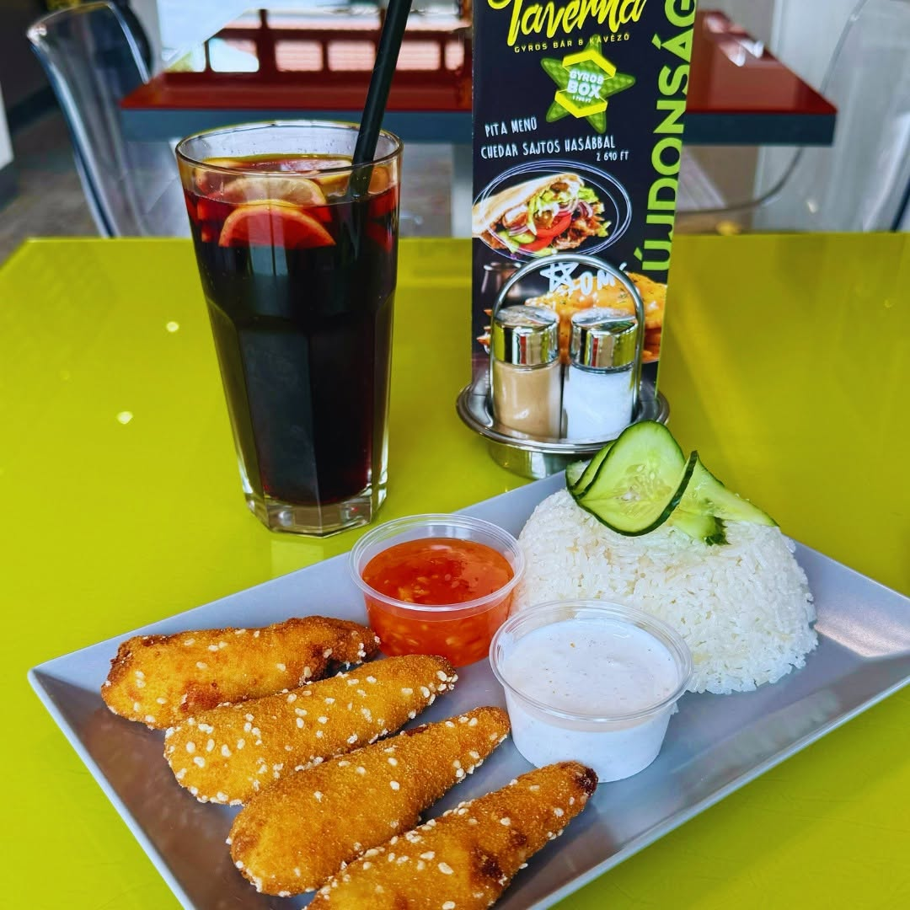

Taverna Gyros Bár & Kávézó · Monor
Minden adag frissen készül.
Gyros, burger, tálak és Pellini kávé — egy fedél alatt, a Móricz Zsigmond utca sarkán. Helyben, elvitelre, vagy házhoz szállítva.
Nem lánc-érzés
A Taverna nem egy újabb gyorsétterem.
A Móricz Zsigmond utca sarkán vár, ahol a hús frissen pörköl a nyárson, és a kávé is elkészül, amíg a rendelésedre vársz. Gyros bár és kávézó egy fedél alatt — helyben, elvitelre vagy házhoz szállítva.
Házhozszállítás
A Taverna házhoz jön.
Monor területén 3 500 Ft feletti rendelés esetén a kiszállítás díjmentes. A környező településekre is szállítunk telefonos rendeléssel — a pontos díjat és a minimum rendelési értéket telefonon egyeztetjük.

Galéria
Ahogy a Taverna kinéz.
Valódi képek a monori Tavernából — nem stockfotó, nem AI. A napi menüért és a friss hírekért kövess minket a Facebook-oldalunkon.




Kapcsolat
Gyere be, vagy hívj minket.
2200 Monor, Móricz Zsigmond u. 39.
Rendelésfelvétel 20:30-ig · Vasárnap: zárva